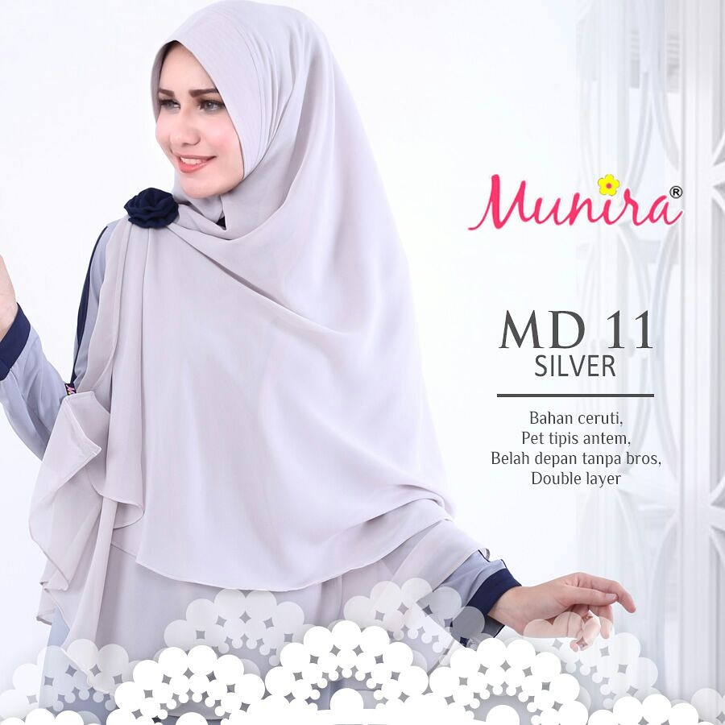

Penggunaan Internet Berkembang Pesat
Dalam waktu 15 tahun terakhir, internet telah berkembang pesat. Kebutuhan setiap orang terhadap internet semakin besar. Sebuah infographic dari WebHostingBuzz menunjukkan jumlah pengguna internet pada tahun 1995 hanya berjumlah 16 juta orang saja.Berita Selengkapnya >>>>

Berita Selengkapnya >>>>
Perkembangan Fashion Hijab Indonesia yang Mendunia
Pada zaman dulu, wanita yang memakai jilbab sering dikatakan jadul atau tidak modis karena model jilbab/kerudung yang kurang enak di pandang mata dan terlihat begitu kedodoran dan sangat sederhana.Berita Selengkapnya >>>>
3 Penyebab Lipstik "Matte" Masih Jadi Andalan Banyak Wanita
Tren lipstik matte belum memperlihatkan tanda-tanda bakal segera meredup. banyak wanita memilih jenis lipstik ini karena intensitas warna yang bertahan lama.Berita Selengkapnya >>>>